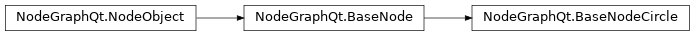

BaseNode
- class NodeGraphQt.BaseNode(qgraphics_item=None)
The
NodeGraphQt.BaseNodeclass is the base class for nodes that allows port connections from one node to another.
example snippet:
1from NodeGraphQt import BaseNode 2 3class ExampleNode(BaseNode): 4 5 # unique node identifier domain. 6 __identifier__ = 'io.jchanvfx.github' 7 8 # initial default node name. 9 NODE_NAME = 'My Node' 10 11 def __init__(self): 12 super(ExampleNode, self).__init__() 13 14 # create an input port. 15 self.add_input('in') 16 17 # create an output port. 18 self.add_output('out')
Methods:
set_icon([icon])Set the node icon.
icon()Node icon path.
widgets()Returns all embedded widgets from this node.
get_widget(name)Returns the embedded widget associated with the property name.
add_custom_widget(widget[, widget_type, tab])Add a custom node widget into the node.
add_combo_menu(name[, label, items, tab])Creates a custom property with the
NodeObject.create_property()function and embeds aPySide2.QtWidgets.QComboBoxwidget into the node.add_text_input(name[, label, text, tab])Creates a custom property with the
NodeObject.create_property()function and embeds aPySide2.QtWidgets.QLineEditwidget into the node.add_checkbox(name[, label, text, state, tab])Creates a custom property with the
NodeObject.create_property()function and embeds aPySide2.QtWidgets.QCheckBoxwidget into the node.hide_widget(name)Hide an embedded node widget.
show_widget(name)Show an embedded node widget.
add_input([name, multi_input, display_name, ...])Add input
Portto node.add_output([name, multi_output, ...])Add output
Portto node.get_input(port)Get input port by the name or index.
get_output(port)Get output port by the name or index.
delete_input(port)Delete input port.
delete_output(port)Delete output port.
set_port_deletion_allowed([mode])Allow ports to be removable on this node.
Return true if ports can be deleted on this node.
set_ports(port_data)Create node input and output ports from serialized port data.
inputs()Returns all the input ports from the node.
Return all input ports.
outputs()Returns all the output ports from the node.
Return all output ports.
input(index)Return the input port with the matching index.
set_input(index, port)Creates a connection pipe to the targeted output
Port.output(index)Return the output port with the matching index.
set_output(index, port)Creates a connection pipe to the targeted input
Port.Returns all nodes connected from the input ports.
Returns all nodes connected from the output ports.
add_accept_port_type(port, port_type_data)Add a accept constrain to a specified node port.
accepted_port_types(port)Returns a dictionary of connection constrains of the port types that allow for a pipe connection to this node.
add_reject_port_type(port, port_type_data)Add a reject constrain to a specified node port.
rejected_port_types(port)Returns a dictionary of connection constrains of the port types that are NOT allowed for a pipe connection to this node.
on_input_connected(in_port, out_port)Callback triggered when a new pipe connection is made.
on_input_disconnected(in_port, out_port)Callback triggered when a pipe connection has been disconnected from a INPUT port.
- widgets()
Returns all embedded widgets from this node.
See also
- Returns:
embedded node widgets. {
property_name:node_widget}- Return type:
dict
- get_widget(name)
Returns the embedded widget associated with the property name.
- Parameters:
name (str) – node property name.
- Returns:
embedded node widget.
- Return type:
- add_custom_widget(widget, widget_type=None, tab=None)
Add a custom node widget into the node.
see example Embedding Custom Widgets.
Note
The
value_changedsignal from the added node widget is wired up to theNodeObject.set_property()function.- Parameters:
widget (NodeBaseWidget) – node widget class object.
widget_type – widget flag to display in the
NodeGraphQt.PropertiesBinWidget(default:NodeGraphQt.constants.NodePropWidgetEnum.HIDDEN).tab (str) – name of the widget tab to display in.
Creates a custom property with the
NodeObject.create_property()function and embeds aPySide2.QtWidgets.QComboBoxwidget into the node.Note
The
value_changedsignal from the added node widget is wired up to theNodeObject.set_property()function.- Parameters:
name (str) – name for the custom property.
label (str) – label to be displayed.
items (list[str]) – items to be added into the menu.
tab (str) – name of the widget tab to display in.
- add_text_input(name, label='', text='', tab=None)
Creates a custom property with the
NodeObject.create_property()function and embeds aPySide2.QtWidgets.QLineEditwidget into the node.Note
The
value_changedsignal from the added node widget is wired up to theNodeObject.set_property()function.- Parameters:
name (str) – name for the custom property.
label (str) – label to be displayed.
text (str) – pre filled text.
tab (str) – name of the widget tab to display in.
- add_checkbox(name, label='', text='', state=False, tab=None)
Creates a custom property with the
NodeObject.create_property()function and embeds aPySide2.QtWidgets.QCheckBoxwidget into the node.Note
The
value_changedsignal from the added node widget is wired up to theNodeObject.set_property()function.- Parameters:
name (str) – name for the custom property.
label (str) – label to be displayed.
text (str) – checkbox text.
state (bool) – pre-check.
tab (str) – name of the widget tab to display in.
- hide_widget(name)
Hide an embedded node widget.
Warning
Undo is NOT yet supported for this function.
- Parameters:
name (str) – node property name for the widget.
- show_widget(name)
Show an embedded node widget.
Warning
Undo is NOT yet supported for this function.
- Parameters:
name (str) – node property name for the widget.
- add_input(name='input', multi_input=False, display_name=True, color=None, locked=False, painter_func=None)
Add input
Portto node.Warning
Undo is NOT supported for this function.
- Parameters:
name (str) – name for the input port.
multi_input (bool) – allow port to have more than one connection.
display_name (bool) – display the port name on the node.
color (tuple) – initial port color (r, g, b)
0-255.locked (bool) – locked state see
Port.set_locked()painter_func (function or None) – custom function to override the drawing of the port shape see example: Creating Custom Shapes
- Returns:
the created port object.
- Return type:
- add_output(name='output', multi_output=True, display_name=True, color=None, locked=False, painter_func=None)
Add output
Portto node.Warning
Undo is NOT supported for this function.
- Parameters:
name (str) – name for the output port.
multi_output (bool) – allow port to have more than one connection.
display_name (bool) – display the port name on the node.
color (tuple) – initial port color (r, g, b)
0-255.locked (bool) – locked state see
Port.set_locked()painter_func (function or None) – custom function to override the drawing of the port shape see example: Creating Custom Shapes
- Returns:
the created port object.
- Return type:
- get_input(port)
Get input port by the name or index.
- Parameters:
port (str or int) – port name or index.
- Returns:
node port.
- Return type:
- get_output(port)
Get output port by the name or index.
- Parameters:
port (str or int) – port name or index.
- Returns:
node port.
- Return type:
- delete_input(port)
Delete input port.
Warning
Undo is NOT supported for this function.
You can only delete ports if
BaseNode.port_deletion_allowed()returnsTrueotherwise a port error is raised see alsoBaseNode.set_port_deletion_allowed().- Parameters:
port (str or int) – port name or index.
- delete_output(port)
Delete output port.
Warning
Undo is NOT supported for this function.
You can only delete ports if
BaseNode.port_deletion_allowed()returnsTrueotherwise a port error is raised see alsoBaseNode.set_port_deletion_allowed().- Parameters:
port (str or int) – port name or index.
- set_port_deletion_allowed(mode=False)
Allow ports to be removable on this node.
See also
- Parameters:
mode (bool) – true to allow.
- port_deletion_allowed()
Return true if ports can be deleted on this node.
See also
- Returns:
true if ports can be deleted.
- Return type:
bool
- set_ports(port_data)
Create node input and output ports from serialized port data.
Warning
You can only use this function if the node has
BaseNode.port_deletion_allowed()is True seeBaseNode.set_port_deletion_allowed()Hint
example snippet of port data.
{ 'input_ports': [{ 'name': 'input', 'multi_connection': True, 'display_name': 'Input', 'locked': False }], 'output_ports': [{ 'name': 'output', 'multi_connection': True, 'display_name': 'Output', 'locked': False }] }
- Parameters:
port_data (dict) – port data.
- inputs()
Returns all the input ports from the node.
- Returns:
{<port_name>: <port_object>}
- Return type:
dict
- input_ports()
Return all input ports.
- Returns:
node input ports.
- Return type:
list[NodeGraphQt.Port]
- outputs()
Returns all the output ports from the node.
- Returns:
{<port_name>: <port_object>}
- Return type:
dict
- output_ports()
Return all output ports.
- Returns:
node output ports.
- Return type:
list[NodeGraphQt.Port]
- input(index)
Return the input port with the matching index.
- Parameters:
index (int) – index of the input port.
- Returns:
port object.
- Return type:
- set_input(index, port)
Creates a connection pipe to the targeted output
Port.- Parameters:
index (int) – index of the port.
port (NodeGraphQt.Port) – port object.
- output(index)
Return the output port with the matching index.
- Parameters:
index (int) – index of the output port.
- Returns:
port object.
- Return type:
- set_output(index, port)
Creates a connection pipe to the targeted input
Port.- Parameters:
index (int) – index of the port.
port (NodeGraphQt.Port) – port object.
- connected_input_nodes()
Returns all nodes connected from the input ports.
- Returns:
{<input_port>: <node_list>}
- Return type:
dict
- connected_output_nodes()
Returns all nodes connected from the output ports.
- Returns:
{<output_port>: <node_list>}
- Return type:
dict
- add_accept_port_type(port, port_type_data)
Add a accept constrain to a specified node port.
Once a constrain has been added only ports of that type specified will be allowed a pipe connection.
port type data example
{ 'port_name': 'foo' 'port_type': PortTypeEnum.IN.value 'node_type': 'io.github.jchanvfx.NodeClass' }
- Parameters:
port (NodeGraphQt.Port) – port to assign constrain to.
port_type_data (dict) – port type data to accept a connection
- accepted_port_types(port)
Returns a dictionary of connection constrains of the port types that allow for a pipe connection to this node.
- Parameters:
port (NodeGraphQt.Port) – port object.
- Returns:
{<node_type>: {<port_type>: [<port_name>]}}
- Return type:
dict
- add_reject_port_type(port, port_type_data)
Add a reject constrain to a specified node port.
Once a constrain has been added only ports of that type specified will NOT be allowed a pipe connection.
port type data example
{ 'port_name': 'foo' 'port_type': PortTypeEnum.IN.value 'node_type': 'io.github.jchanvfx.NodeClass' }
- Parameters:
port (NodeGraphQt.Port) – port to assign constrain to.
port_type_data (dict) – port type data to reject a connection
- rejected_port_types(port)
Returns a dictionary of connection constrains of the port types that are NOT allowed for a pipe connection to this node.
- Parameters:
port (NodeGraphQt.Port) – port object.
- Returns:
{<node_type>: {<port_type>: [<port_name>]}}
- Return type:
dict
- on_input_connected(in_port, out_port)
Callback triggered when a new pipe connection is made.
The default of this function does nothing re-implement if you require logic to run for this event.
Note
to work with undo & redo for this method re-implement
BaseNode.on_input_disconnected()with the reverse logic.- Parameters:
in_port (NodeGraphQt.Port) – source input port from this node.
out_port (NodeGraphQt.Port) – output port that connected to this node.
- on_input_disconnected(in_port, out_port)
Callback triggered when a pipe connection has been disconnected from a INPUT port.
The default of this function does nothing re-implement if you require logic to run for this event.
Note
to work with undo & redo for this method re-implement
BaseNode.on_input_connected()with the reverse logic.- Parameters:
in_port (NodeGraphQt.Port) – source input port from this node.
out_port (NodeGraphQt.Port) – output port that was disconnected.
BaseNode (Circle)
- class NodeGraphQt.BaseNodeCircle(qgraphics_item=None)
Implemented in
v0.5.2The
NodeGraphQt.BaseNodeCircleis pretty much the same class as theNodeGraphQt.BaseNodeexcept with a different design.
example snippet:
1from NodeGraphQt import BaseNodeCircle 2 3class ExampleNode(BaseNodeCircle): 4 5 # unique node identifier domain. 6 __identifier__ = 'io.jchanvfx.github' 7 8 # initial default node name. 9 NODE_NAME = 'My Node' 10 11 def __init__(self): 12 super(ExampleNode, self).__init__() 13 14 # create an input port. 15 self.add_input('in') 16 17 # create an output port. 18 self.add_output('out')